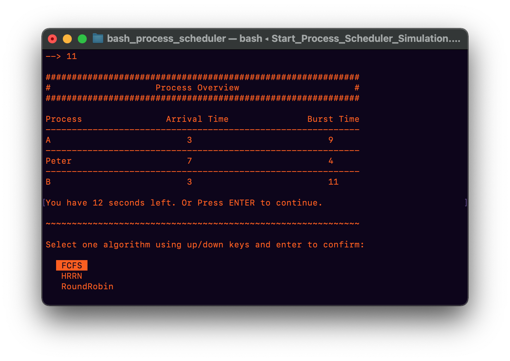
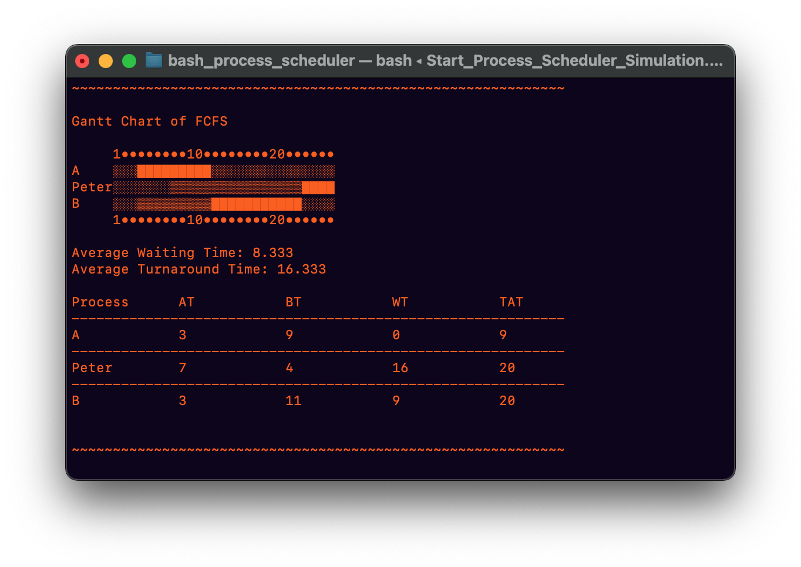

Visualization of Scheduling Algorithms in Bash Script.
This project was developed as a practical exam of the module “Operating Systems and Computer Networks”
of my degree program. It was developed in work with my two team partners over a period of several weeks
during the semester.
It is a command line level program that visualizes some popular process scheduling algorithms (First
Come First Served, Round Robin, Highest Response Ratio Next). The user can create any process he wants.
A process is composed of a name, an arrival time and a duration. The given processes are then simulated
with a scheduling algorithm chosen by the user and the output is displayed in a Gantt chart.
No library was used for the representation of the processes, or the visualization as a Gantt chart. The
whole project was done by the team and uses only pure Bash script.
My task during the project was to design and implement the scheduling algorithms as well as the module
which outputs the result as a Gantt chart. This also included the logic of the data structures that
represent the processes and results.
You can find the code for the project on my Github.
Example:
After starting the script the user is asked if a set of sample processes should be used:
If the user chooses No, he can now specify how many processes he wants to create:

The user then enters the name, arrival time and burst time for each process and receives an overview:
Next, the user selects an algorithm using the arrow keys.
Now the Gantt chart is displayed. A block stands for time in which a process is executed and a light block for waiting time. In the table below the user gets additional information about waiting time and turn-around time:
The user can then simulate the same processes again with a different algorithm if desired:

When choosing the Round Robin scheduling algorithm, the user must specify a time slice:
And finally the result with Round Robin: